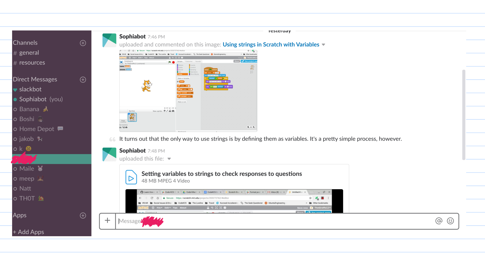
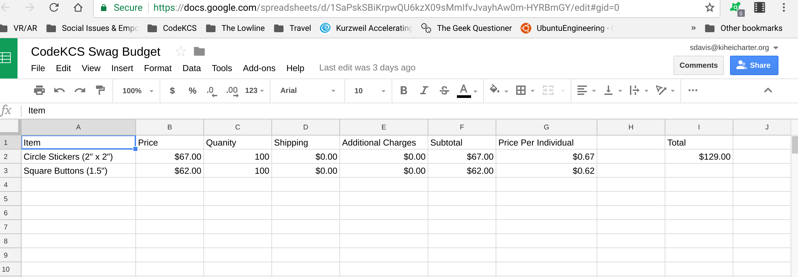
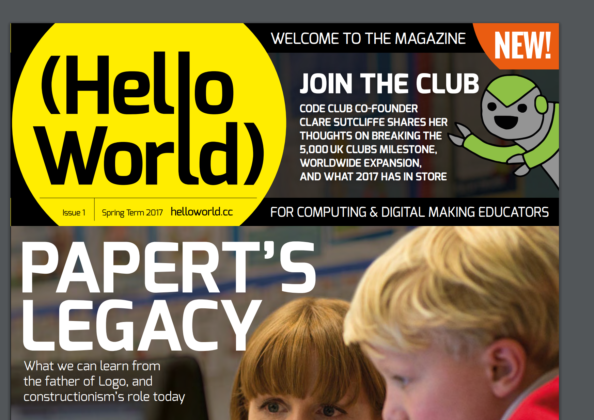
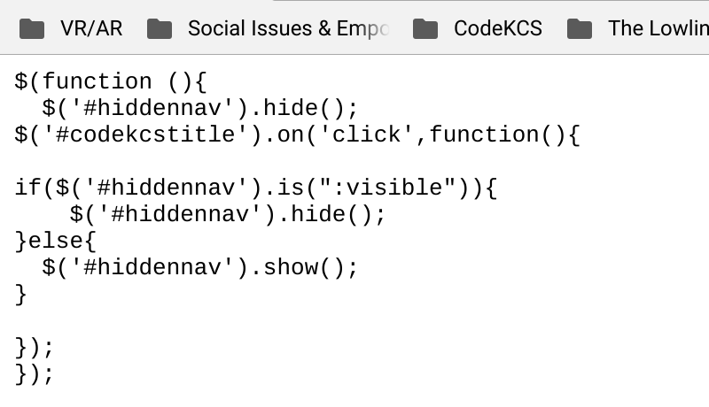
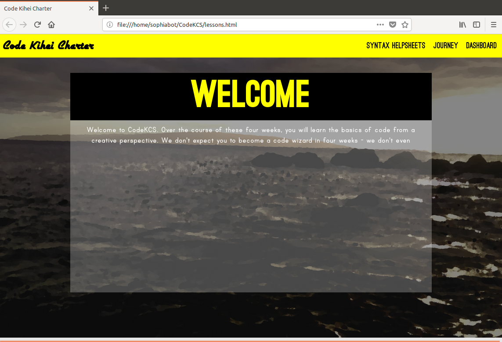
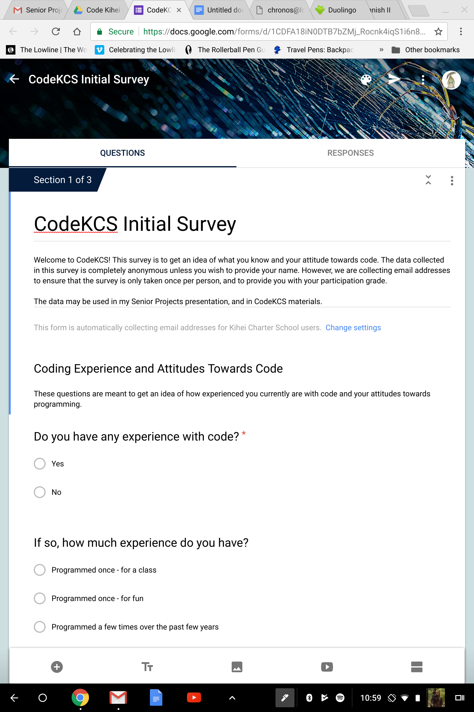
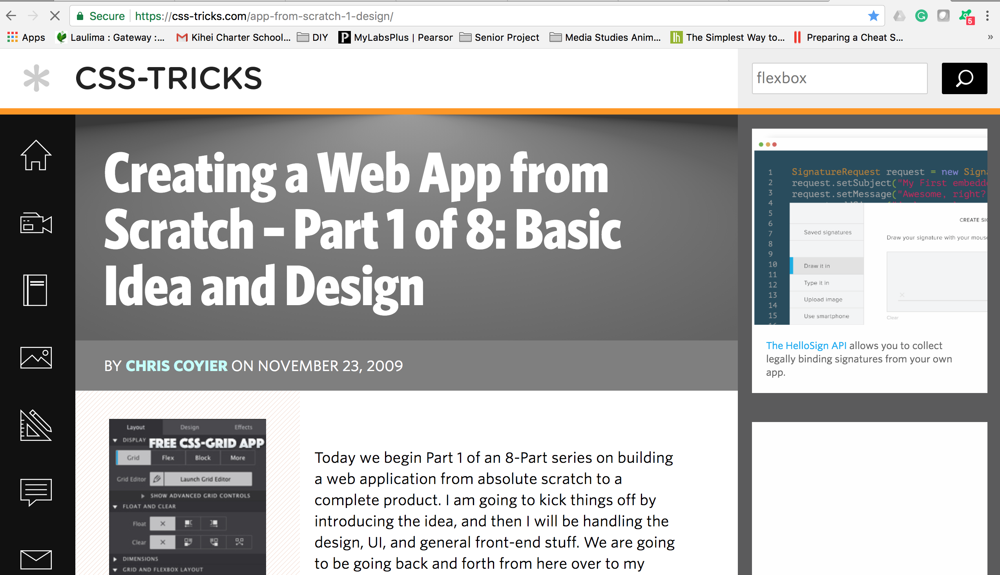
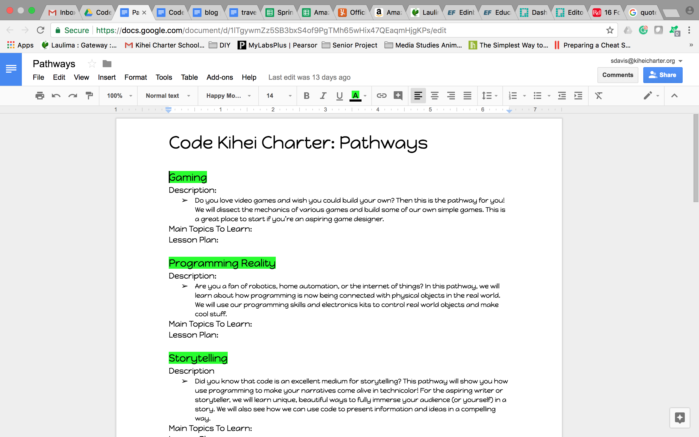
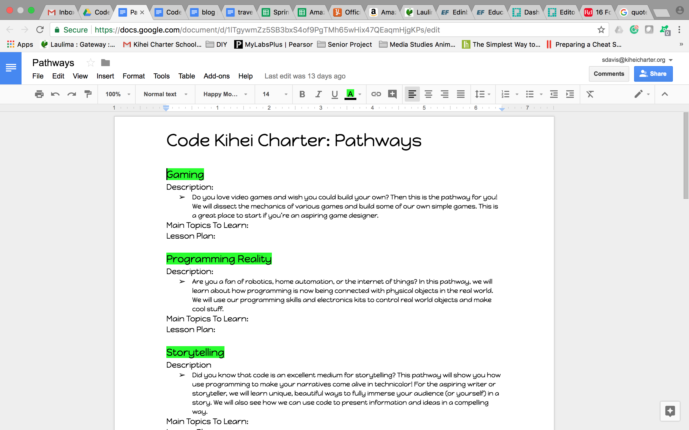

PROJECT JOURNAL
Blog 15: Complete Overview Assessment
 Completion Overview:
Completion Overview:
Goal 1: Instead of a final project, we are creating a final portfolio to showcase the various assignments they did in the class. What I originally had in mind for “projects” are now going to be in class assignments that they will get to play around with the last week of class, probably on that Monday before we start diving into RobotC. This portfolio should be complete by the final day of class, March 2nd. I will review it that day and provide the students with feedback.
Goal 2: Gave the students their initial survey on the first day of class. I am now working on putting together the final survey and the deciding upon which questions I should ask to get the most accurate feedback. Some of the questions are the same from the first survey, but just asked again to see growth. Between the first and final surveys, I should have sufficient data to measure changes in their attitudes towards code. I will also be comparing all the productivity scores from the End of Class Feedback sheets I have been collecting from them after every class.
Goal 3: This one is tricky, as I’m not sure if measuring computational learning after only six class periods is fair to the students and an accurate assessment of their abilities. This was originally operating under the assumption that students would be completing two additional (mini) projects before the end of the course. Things have moved a little slower than I anticipated, however the students still seem to be learning and responding well to the material. I feel that every student having a complete portfolio from this class, with assignments and code snippets that met the original requirements, will be sufficient evidence of both participation and growth in skills. I would like to overwrite this goal with two new ones.
I have been considering extending this class as a club after it’s over, so that students that found it especially interesting can continue building upon their skills in a more collaborative environment (rather than trying to continue it at home - which can be daunting for some). Ideally, I would also like to do some programming-outreach to the larger KCS community through this club, perhaps in the form of hosting a ‘Programming Night’, Hackathon, or some other event of that kind. This is partially because I have been receiving promising feedback from my students, so I am considering asking in the final survey whether or not they’d be willing to join a club that continues to build upon this class. The first part of this goal is:
Have at least 30% of the students (there are about 60 students, so at least 18 of them) indicate that they’d be interested in joining the club on the final survey.
However, there will always be issues with dates, times, etc. when it comes to actually retaining students for a club. If at least 30% of the students are interested, I would like to start the club and move on to the next goal:
Retain between 10% (6 students) and 15% (9 students) of the students from my CodeKCS classes for the CodeKCS club.
This is operating under the assumption that we would have a few students from outside of the classes join the club as well (I know a few students in other grades that were interested in the material). While it would be amazing to retain 30% of the students, it might also be a little overwhelming, as the purpose of such a club would be mainly for students to receive more mentorship and one on one help with their coding endeavors. If we were to retain more than 15% of the students AND have a few kids from outside of the classes join, I would possibly need to recruit more help to lead such a big group with varying interests. Or I would have to change the club template to something more similar to a class rather than a club. No matter what, I would love for many of the CodeKCS engineering class students to come to the events hosted by the club. :)
Blog 14: 21st Century Skills (Part 2)

This project is civically engaged in several aspects. Programming is a useful skill for students to learn, and by providing a class like this at our school, we are better preparing the school ‘community’ with tools that can come in handy in today’s digital world. An important part of this course is providing resources to students that may not know where to start with code. Hopefully, through mentorship and access to those resources, we can foster a better STEM culture at our school for the students that want to enter those fields.
An important part of this process is also allowing the students to receive help from each other with their code, and to be able to contact me whenever they’ve run into a problem. We’re using a platform called Slack to communicate, and the students are able to contact me whenever they need help. I also walk around the classroom and help students one on one with their code for a good fraction of the class. This is all important for fostering a good environment for learning and understanding code.
Self-Direction Self direction is a huge part of this project. Up until this class started (and even now, as it’s going on), I’ve spent so many hours researching, designing the curriculum, brushing up on my programming skills, learning more about computer science in general to answer questions, building the website, and setting up everything so that the students could get the most out of this class. Despite all the planning, there were of course things I didn’t anticipate in class that I used to improve each class that I taught afterwards (three classes - the first was by far the most difficult). However, all my preparation really saved me and I feel that it made my first day of teaching, dare I say it, a success. After that, I was at school until 4pm and, within about an hour and a half of getting home, I had finished and posted the details of the homework and the preparation for next class. My throat was sore from talking loudly all day and I could feel myself starting to get sick. But there was still more to be done.
Both me and one of the students in class yesterday didn’t know how to do a certain thing in Scratch, so I researched it when I got home and, through Slack, sent her a video I made on how to do it and where to find the blocks, etc. Things are going to become more and more busy as the course progresses, and my self direction skills will probably be the main thing that will help me keep my sanity. I’ve also been posting optional resources, such as articles and interesting websites, to Slack for the students to take a look at. I think this is an important part of both showing that I care about their programming journey and that code can be a very interesting, fun topic. I feel that it gives what we’re learning more relevance.
Financial Economic & Business Literacy This is a screenshot of the (not finalized) CodeKCS ‘swag’ budget. At conferences, businesses give out company ‘swag’ such as stickers, buttons, t-shirts, and other random things that the conference goers often wear with pride afterwards. I really want CodeKCS to be a fun experience for the students and I feel that getting them some good quality stickers and pins from Sticker Mule would help them be more proud of their work in this class. We don’t have enough time to make their programs very ‘beautiful’, and I worry that it could hurt their morale a little bit to have a functional product that doesn’t have the aesthetics that would come with more time to work on it. However, I want them to take pride in their work and hopefully be more motivated to continue their coding journey, so I want to give them some cool swag as gifts. The stickers printed by this company are absolutely beautiful quality - I got some from a camp I went to a few years ago and I proudly put them on my phone and my laptop. They are, however, somewhat expensive. I don’t mind spending so much on them, as I had allocated my internship money for this course if necessary. However, I want to make sure that I have enough of them for everyone and that I design them well enough so that they’re worth the money. I plan on ordering them by Monday, however this budget may have to be updated. I’ll post the updated budget next week.
Global Awareness I want to start incorporating more global awareness into this class, perhaps by posting more resources about how programming is helping make the world a better place. Or perhaps I could send them resources related to programming education around the world, which was something I have been looking up recently out of curiosity. I definitely want to give my students a more global perspective on programming, as code is such an integral part of our lives today and can either help or hinder the societies and individuals that are exposed to it. I want to open up the floor for discussion on those topics as well, perhaps a CodeKCS Question of the Week related to global events and code’s effect on it. These are all things that I’ve been considering recently. However, the main global awareness that I’ve been acquiring has been through researching global code education and subscribing to the Hello World newsletter about coding, based in the UK (which is kinda a global leader right now in terms of code education). They don’t publish many issues very often, so I’ve mostly been going through the back issues to read about how they’re teaching kids of all ages how to code.
Blog 13: 21st Century Skills (Part 1)

I had a meeting with Mr. Murali yesterday (Feb 5) to discuss the curriculum, logistics of class, resources needed, and other details for my class this friday. I must make sure I communicate all the moving parts to Murali and that I receive his feedback on them to ensure that he’s in the loop and the class is a success. Another big part of this class is communicating effectively with the students. I have to find a way to make the curriculum fun, let my enthusiasm show, and speak loud enough for them to hear me when I’m presenting to the students.
Interpersonal

I have to work well with students and teachers to make the class a success. I’m naturally fairly introverted, but this project has required the help of many other people and, for once, it’s not a project I can do only by myself. This includes doing interviews, surveys, and end of the day check-ins with students to make sure that the students are getting something out of the class. I will also be tweaking the class as I go with student feedback because the students are the users, and the class is the product. Gotta make sure they’re happy with how the class is going.
Mentorship is also a huge part of this class. I have office hours for both meeting in person and over the web, and my Google chat and Slack channels are always open for students who need help. In general, I plan to go back and forth helping students with their code during class time, as well as checking in with every student here and there to make sure they’re doing alright.
This class is very student centered; everywhere from the students choosing which projects they want to work on to a teaching approach that focuses on mentorship.
Information

I had to brush up on my coding skills and learn new skills to be able to teach this class and hopefully be a good mentor. I also had to learn a lot about teaching - specifically, teaching code, which can be quite a struggle for even professional programmers (sometimes especially for them).
I read up on a lot of literature about how people teach code, what’s wrong with the current way we teach code, and experimental ideas put forth by educators about how to make the process better for the students. It was inspiring and overwhelming at the same time; I incorporated a lot of these ideas, as well as ideas I received from professional programmers and things I observed from my own experience of learning code to put together this curriculum that I have now.
I also realized through my research that motive is an important consideration when teaching people code. Nobody wants to feel like they’re being “forced” into a hobby or job pathway that doesn’t interest them. Rather, I feel that it’s important to teach code as a ‘skill’ that students can use to add to their existing interests, and choose to use in the future if they find it useful enough. Not everyone has to (or should) go into STEM, but a STEM education can be inherently valuable.
Thinking & Problem Solving 
Programming is problem solving. You constantly have to debug code, which means figuring out what went wrong, changing something, rinse wash repeat until you solved that problem. Then configure everything else to work around whatever it is you changed, if necessary. Programming is used in the real world to solve problems, all sorts of problems. From a marketing perspective, one could say that there is some functionality in a product that’s missing from the existing products. To solve that problem, you create your own product with that functionality and sell it. But in the bigger picture, that’s really all there is to it. You notice a lack of something somewhere in your workflow and you use this valuable skill to patch it up. You adjust the settings for you open source text editor, or program a website that’s better than the premade ones you’re used to. You make a better program that perfectly fits your needs as opposed than the ones already available, because that is something only you are capable of doing.
Part of this class is teaching the thought process for coding. We will be teaching some basic logic to the students by having them play with conditionals, booleans, and other programming constructs. These constructs help them learn how to think, not just to think like a computer but to be able to break the world around them into algorithms. It teaches a different perspective that can come in handy with real world problems and can allow them to problem solve more creatively. There’s a reason why I like to say “When in doubt, think like an engineer”.
IMPORTANT DATES: Please list important dates that I need to be aware of for your project.
- Friday, Feb 9: First programming class
- Friday, Feb 16: Second programming class
- Friday, Feb 23: Third programming class
- Week of Feb 26: Meet on Monday, Wednesday, and Friday for three programming classes that week.
Blog 11/12: Update

This photo features the code for one of the website’s pages (not the homepage - rather, the actual meat of the website). This week, I was mainly focusing on the UI and making everything look pretty. However, I was also concerned with the UX (user experience) and how the site itself would interact with the users.
This page is basically a template for everything else - all of the curriculum will be placed within that “lessonscontent” div.
Here is the webpage that corresponds to the code before it. As you can see, it is a very simple template - I changed my original design and went with something that I thought would be more user-friendly. It’s missing the custom-designed arrows on the sides that I made, and I’m considering adding a drop-down menu on the left hand side to navigate the curriculum.
However, my current concern is now with getting all actual curriculum up, working on sign in features, and having a smooth way of transitioning between lessons.
With that being said, one of the things I was working on the most this week was the initial survey for the class. While I was designing it, I was keeping in mind the assessment of both knowledge and attitude towards code, as well as demographics of the students. There are a lot of questions because I want to make sure I get a sizeable chunk of data out of this initial survey. However, most of them are multiple choice or checkbox questions, so I’m hoping they would be a very minor inconvenience to the students.
Data collection is a very important part of my project because I need to assess whether or not the students are learning and how their attitudes towards code have changed. While student interviews are nice and I hope to utilize them at the end of the course, hard anonymized data is nonetheless very important to get an accurate assessment of the class as a whole. I don’t want to just hear from the students who liked the class - I want to get a general picture of whether or not the class made a difference for most of the students.
GOAL
My next step is to use that template and start making a bunch of lessons and pages for all the curriculum. Just boring, tedious work, but someone’s gotta do it. Also, to finally mess around with the login stuff because I’ve been procrastinating on that part - and to make minor tweaks to the UX. But my immediate next step is getting everything up on the site.
Blog 10: Update
I was changing the way the curriculum was organized, to cater to students’ different interests. Not only is this a substantially simpler system, it removes some of the constraints that I was experiencing when I tried to make more specialized learning paths. It gives the students even more power over what they choose to learn in the class, without me having to do any extra work (since all the projects already existed in my previous organization - now they’re all available to every student by clicking checkboxes). Finally, I feel that this system is more transparent and more true to my vision of project based learning. The students don’t just choose a general topic they’re interested in, rather they get to choose the specific projects that they’d like to build.
With this new organization in mind, I’m finishing up my project designs for the curriculum and have started working on the website itself. The webapp components will come later, should I choose to go the webapp route. I just want to get the content out there.
It has been a struggle the last week or so to work on my project, as my Mac’s hardware started failing even more than before. I have to use both an external mouse and keyboard with it now, which makes the computer less portable and less easy to use (I can no longer use trackpad gestures, which severely limits my productivity on a Mac). All of my code, important programs, and most of my project files are on that computer, so I have to use it heavily right now. It doesn’t appear to be a very fixable problem (I looked it up and was unhappy with what I heard about possible repairs), but the Mac still functions well enough as a computer confined to my desk for use when I’m at home. However, I just ordered a new convertible chromebook online that I’ll be able to sync everything with and carry around with me day to day. It should arrive about two weeks from now.
GOAL:
My next step is to implement the curriculum I have so far on the website and make it live.
Blog 9: Update
Going more in depth in designing the lesson plans. Shifted focus from web app to curriculum workflow.

Blog 8: Update
Working on webapp tutorial. Got behind this week because of Running Start finals.
Blog 7: Update
Working on finishing basic curriculum outlines for all pathways (week of Tuesday 12/5).

Blog 6: Goal Setting
Driving Question: How can I teach coding to students at Kihei Charter in an interesting and interactive way?
Timeline:
Week of Tuesday 12/5-Finished basic curriculum outlines for all pathways
Week of Tuesday 12/12-Will have gotten through at least STEP 3 of the Creating a Web App from Scratch guide with my own web app. Basically, all the databases should be set up by now.
Week of Tuesday 12/19-Will have gotten through at least STEP 6 of the Creating a Web App from Scratch guide with my own web app. Basically, AJAX Interactivity added to webapp.
Week of Tuesday 12/26-Will have gotten through the entire Creating a Web App from Scratch guide. Should have a basic (non precious) prototype of the web app that I can beautify, add curriculum + media to, and modify.
I would like to have a meeting with Mrs. Alexander about my project progression sometime during the week of December 5th, as I have important things to update her on (such as the tentative dates for the class I’m teaching). I would hope to meet with her on December 5th during class, however before class or on December 7th would definitely also be doable.
Blog 5: Make Contact With A Mentor (Communication Skills)
Kris Murali (kmurali@kiheicharter.org) is the Engineering teacher at KCS. I am taking over his class for some time during quarter three and we are hopefully meeting today (as previously discussed last week) to go over some of the specifics for the schedule and which classes of students I will be teaching. This information is vital for the success of my project.
Blog 4: Status Update
- Got CodeKCS domain name http://codekcs.me/. Whipped up a dummy page so that people have something to look at if they go to the site. Github repository exists and is configured to publish my code to the webpage.
- Created the design skeleton of the online portion in Sketch
- Completed SQL course on Codecademy so that I understand how to create the database
- Finished Java and Sass courses on Codecademy, to brush up on skills I want to teach in the course. Started working on some of their project based courses (Responsive Design, Deploying Websites) to see if I should have CodeKCS students work on them as assignments.
- Finished curriculum outline/details for Week One of CodeKCS. Finalized list of Pathways and their descriptions. Still finalizing which projects I want each pathway to work on.
- Put together general ideas for grading system, syllabus layout, and the overall structure of how I want to teach the class. Also put together a general idea of how the beta testing will work. I hope to have either virtual or physical office hours so that the beta testers will still have support.
- Still trying to figure out if we have enough time for a couple guest speakers via Google Hangouts. Will have to reach out to the guest speakers, however they are all already part of my network and I know that they would all be psyched to talk to KCS kids about code! :)
- Put together a general timeline for building & putting together the web app.
Here's the link to the ideas and general curriculum for the program.


 


Blog 3: Research (Information Skills)
Thus far in my research, I learned a lot about the negative effects of coding stereotypes on students. One of the most pressing examples that I hadn’t considered right now was the effect of the male programmer stereotype on young girls who are interested in programming. One study showed that both male and female children associated males with programming and said that boys are naturally better at programming, despite that not necessarily being the case in their own classroom. This study, as well as others, illustrated that stereotypes about programming can start as young as first grade. Apart from gender stereotypes, many young people have picked up stereotypes about computer programmers being antisocial and bad communicators, which adds to the established negative feelings many students already have towards code. Finally, in my research, I looked into computational learning and how to measure that in students. Basically, this means measuring how well students have picked up the ‘programming mentality’. One of the best ways to measure this is by taking a look at the variation of data structures used by students when they code (either using Scratch or a different language). More variation and creativity with code shows true understanding, while seeing the same things over again either indicate copy/pasting or a not quite deep understanding. Such things, of course, aren’t black and white. When it comes to grading code, I have decided that I’m better off grading qualitatively, factoring in what I know about the student, rather than just trying to crunch quantitative data.
Sources:
http://blogs.edweek.org/edweek/curriculum/2017/05/gender_stereotypes_coding_ability_start_young_1st_grade.html
https://medium.com/@WordcorpGlobal/programming-doesnt-require-talent-or-even-passion-11422270e1e4
https://www.linkedin.com/pulse/you-think-computer-programmers-poor-communicators-may-warshaw
http://fortune.com/2015/07/28/2-billion-under-20/
https://www.forbes.com/sites/georgeanders/2015/07/29/liberal-arts-degree-tech/#72ffe8ad745d
http://scratched.gse.harvard.edu/ct/files/AERA2012.pdf
All of these sources are related to programming education and what it’s like to be a programmer in the real world. I would say that they’re all fairly reliable because every single one of them comes from a source that is well known for credibility. If there was an error or a bias, the authors would be more likely to add a correction. The least reliable of them is perhaps the Medium article, however I was referring to it more as a blog/real life experience article rather than a source for hard data.
Blog 2: Timeline
- October: Work on curriculum, finish project proposal. Meet with Mrs. Alexander.
- November: Finish research essay, finish initial curriculum. Meet with Mrs. Alexander about curriculum. Build website.
- December: Create all the media, activities, etc. for the website during December and over break. Order stickers + pins.
- January: Open up beta testing for website. Collect surveys + feedback for 4 week beta testing period (this includes over break).
- February: Tweak and modify material + website based on feedback. Meet with Mrs. Alexander and Mr. Murali to confirm that everything looks good for class.
- March: Teach the class in March and April. Collect feedback, see if it has to be modified. Be at the class to help students with the material.
- April: Finish teaching the class. Analyze the feedback + surveys, create a detailed report, present those findings.
Blog 1: Driving Question & Measurable Goal
Driving Question: How can I teach coding to students at Kihei Charter in an interesting and interactive way?
Goals:- Have every student complete a final coding project based on their passions that shows what they learned in the class.
- Give the students a survey about how useful the class was, if they feel that they've grown as a programmer, if it changed their perspectives about coding, etc. Get positive feedback on all those areas by at least 70% of the class.
- Based on computational learning tests, students will show at least a 50% improvement in computational learning/problem solving by the end of the course.

DAYS 0: DRIVING QUESTIONS